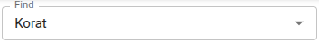

Editing Data¶
The Editor is available in specific instances of TriplyDB. It allows creating, updating or deleting data that have a structure that is defined in a SHACL shapes graph. For example, a shapes graph could define the structure of a concept scheme based on SKOS, or it could define the structure of a data catalogue based on DCAT.
This section describes using the Editor to edit SKOS concept schemes as an example. The Editor works in a similar way for other views.
In order to open the Editor, select the dataset that you want to work with. If your instance provides the feature, you will see "Editor" on the left-hand side. Pressing there will open the Editor pane.
Alternatively, instance hyperlinks can be dragged and dropped on the "Editor" menu entry, to directly view the instance in the Editor.
About Editor forms¶
The Editor uses forms to create or edit instances of a class. The image below shows elements of a form.

In Editor forms, an asterisk (*) is used to mark mandatory properties of an instance. It is not possible to save resources that do not have a value for all mandatory properties.
In order to add a property, press the plus symbol (+). Some properties can occur multiple times, with different values.
In order to remove a property, press the waste basket symbol.
Input fields for values support dropdown lists where possible. Alternatively, it is possible to start typing to bring up a list of matching values. The availabilty of dropdown lists is indicated by a small downward facing triangle on the right of the input field.
Choosing an Editor view¶
In the top left corner of the Editor pane, the view button can be used to select a different view, if multiple views are configured. The image below shows the SKOS view being selected.
Creating a new instance¶
In the top right corner of the Editor pane you can find the create button. It can be used to create a new instance of a class that is defined in the shapes graph.
Pressing the create button will open a form that allows picking the class for the new instance, and setting other properties. By default, each resource needs to have an IRI (Internationalized Resource Identifier). The Editor generates an IRI, which can be changed, if needed.
Finding an instance¶
Next to the create button there is an input box that can be used to find an instance based on its label. All data that are configured to be used by the Editor are included in the search. You can start typing to populate a dropdown list with resources that have a matching sequence of characters somewhere. The matching characters are displayed in boldface.

SKOS: selecting concept schemes¶
In the SKOS view, it is possible to select a concept scheme to work with. Press the concept scheme(s) input field to choose a concept scheme from a dropdown list. Alternatively, start typing to find a concept scheme with a matching character sequence.
SKOS concept schemes are allowed to be chained, by means of skos:narrowMatch and skos:broadMatch relations between concepts. Once a concept scheme is found, you can press in the space behind its name to find and select nested concept schemes. Concept schemes in the chain will be assigned different colours, as shown in the image below.
SKOS: navigating concept schemes¶
Once one or more concept schemes have been selected, the hierarchy of concepts and concept schemes is displayed in a tree view:
The symbol > in front of a concept means that the concept has underlying elements. Pressing > will expand the concept. The symbol will then point downward to show that the concept has been expanded. When a concept has no underlying concepts, its name is preceded by a dot (•).
As concepts can be defined in different nested concept schemes, the coloured label of the concept scheme is displayed for each concept.
To search within the concept hierarchy, use the Search in hierarchy input field.
When a concept in the concept hierarchy is selected, detailled information is displayed on the right-hand side of the Editor pane.
Instance details¶
When an instance (for example, a SKOS concept) is selected on the left side of the Editor pane, a description of the instance is shown on the right:
Below the name of the instance, its IRI is displayed as a hyperlink (blue underlined). The hyperlink can be dragged and dropped on other visualisation in TriplyDB, like Browser or Triples. To the right of the instance hyperlink its class is shown.
For instances that have been edited in the Editor, a history of changes is recorded. Details of the last change are shown by Modified by and Modified. The symbol of the backward turning clock can be pressed to show the complete modification history of the selected instance. The image below shows an example.
Copying an instance¶
The copy button can be used to copy an instance. That can be useful if a new instance is needed that is similar to an existing one.
Editing an instance¶
The edit button can be used to edit the properties of an instance.
Deleting an instance¶
To remove an instance, press the delete button. You will be asked for a confirmation before the instance is really deleted.